자연생태복원기사(구) (2012-05-20 기출문제)
1과목: 환경생태학개론
1. 먹이사슬에 관한 설명으로 틀린 것은?
- 영양단계가 올라갈수록 엔트로피가 감소하여 이용 가능한 에너지가 증가한다.
- 독립영양생물을 기점으로 먹고 먹히는 생물군의 연계를 말한다.
- 초식먹이사슬, 잔재유기물먹이사슬이 있다.
- 모든 생물이 먹이연쇄를 이루고 있으므로 생태 평형이 이루어진다.
(정답률: 71%)

2. 부영양화의 진행 정도에 따라 일반적으로 구분되는 호수의 영양상태가 아닌 것은?
- 영양염류상태
- 빈영양상태
- 부영양상태
- 중영양상태
(정답률: 54%)
3. 호소의 유역으로부터 유입되는 인의 배출원으로 옳지 않은 것은?
- 비료
- 가축분뇨
- 하수 처리장
- 가두리양식장
(정답률: 64%)
4. 온대 중부지방에서 사용하던 농경지를 방치했을 때 일어나는 천이계일이 옳은 것은?
- 억새 → 소나무림 → 서어나무림 → 졸참나무림
- 억새 → 졸참나무림 → 소나무림 → 서어나무림
- 억새 → 서어나무림 → 소나무림→ 졸참나무림
- 억새 → 소나무림 → 졸참나무림→ 서어나무림
(정답률: 60%)
5. 주요 대기 오염물질 중 2차 오염물질로 볼 수 있는 것들로만 구성된 것은?
- 일산화탄소, 수산화라디칼, 메탄가스, VOC
- 오존, 아세트알데히드, 과산화수소, PAN5
- 석면, 이산화질소, 오존, 사염화탄소
- 오존, 아황산가스, 메탄가스, PAN5
(정답률: 57%)
6. 습지를 인식 혹은 판별하고 유형 분류 등을 위해 중요한 3가지 구성요소가 아닌 것은?
- 습지 수문
- 습지 동물
- 습지 식물
- 습윤 토양
(정답률: 67%)
7. 강어귀(estuary)의 특성으로 틀린 것은?
- 강 입구나 해안의 만과 같이 반쯤 둘러싸인 수체를 말한다.
- 바닷물보다 민물의 염도에 가깝다.
- 조수작용이 중요한 물리적 조절자이다.
- 종종 영양물질을 효율적으로 걸러내는 제거장치역할을 한다.
(정답률: 60%)
8. 생태계의 에너지 흐름 과정이 옳은 순서로 되어 있는 것은?
- 열에너지 → 화학에너지 → 빛에너지
- 빛에너지 → 화학에너지 → 열에너지
- 빛에너지 → 열에너지 → 화학에너지
- 화학에너지 → 열에너지 → 빛에너지
(정답률: 80%)
9. 생물의 활동은 24시간 주기를 갖는데 세포분열이나 효소분비와 같은 생리적 활성도 일주기를 나타낸다. 이러한 현상은 명암의 교대가 없고 온도나 습도가 일정하게 유지된 환경에서도 일정하게 나타나는데, 이러한 주기성을 일주율이라고 한다. 생물이 일주율로 시간을 감지하는 현상을 무엇이라 하는가?
- 생물학적 주기성
- 생물학적 주행성
- 생물학적 시계
- 생물학적 야행성
(정답률: 66%)
10. 독성이란 물질의 생체에 대한 유독정도를 뜻한다. 대개 생물을 폐사시키거나 해를 주는 만큼의 물질, 양, 농도, 시간으로 표시한다. 다음의 표기법 중 옳지 않은 것은?
- TLm 또는 TL50: 중간내성한계
- LCm 또는 LC50: 중간치사농도
- LDm 또는 LD50: 중간차사시간
- EDm 또는 ED50: 중간유효량
(정답률: 60%)
11. 공진화(coevolution)에 대한 설명으로 옳지 않은 것은?
- 둘 이상의 종이 상호작용하여 일어나는 진화이다.
- 두 종 모두에서 일어나는 변화이다.
- 많은 군집들이 수 세대 동안 진화를 반복 하면서 발전되어 왔다.
- 상리공생하는 군총에서는 공진화가 필요 없다.
(정답률: 84%)
12. 다음 생태계의 순생산량(kg/m2/yr)이 가장 높은 생태계는?
- 초원
- 호수
- 농경지
- 산림
(정답률: 69%)
13. 1992년 6월 채택된 것으로 21세기 지구환경 보전을 위한 국가, 국제기구, 단체 및 국민들이 실천해야 할 책임과 역할을 제시해주는 것으로, 전 지구환경의 완정성과 개발시스템을 보호하기 위하여 국가간의 새로운 지구 동반자적 협력체계를 구축하는데 그 목표를 둔 것이다. 다음의 어떤 것을 말하는가?
- 유엔해양법 협약(United Nations Convention on the Law of the Sea : UNCLOS)
- 북서태평양 환경보전 실천계획(The North-Western Pacific Action Plan : NOWPAP)
- 환경과 개발에 관한 리우선언(The Rio Declaration on Environment and Development)
- 해양환경보전협약/헬싱키협약(Convention on the Protection of the Marine Environment of the Baltic Sea/ Helsinki Convention)
(정답률: 84%)
14. 북위 60∘N에 위치한 북극 일대의 툰드라(Tundra) 지역에 속하는 Engler 식물 분포구는 무엇인가?
- 지중해 연안 식물구
- 한 대 식물구
- 중앙아시아 식물구
- 구아 식물구
(정답률: 84%)
15. 먹이그물의 상위단계에 있는 생물이 높은 독성물질을 체내에 축적하기 쉽다. 이 현상을 무엇이라 하는 가?
- 영양단계 농축
- 생물 농축
- 물질농축
- 독성농축
(정답률: 75%)
16. 초기 부영양화 단계에서 시안세균이 우점하게 되는 이유가 아닌 것은?
- 낮은 온도에서 잘 자라기 때문이다.
- 질소 고정능력이 있기 때문이다.
- 낮은 광농도에서도 잘 자라기 때문이다.
- N:P 비율이 낮아도 잘 자라기 때문이다.
(정답률: 54%)
17. 호수의 층상구조 설명으로 옳지 않은 것은?
- 호수는 일반적으로 표층수, 수온약층, 심수층으로 나눌 수 있다.
- 표수층은 산소와 영양분이 풍부한 층이다.
- 수온약층은 온도와 산소가 급격히 변하는 층이다.
- 심수층은 산소는 부족하니 영양분이 풍부한 층이다.
(정답률: 71%)
18. 조류조사 방법 중 다음 설명에 해당되는 것은?
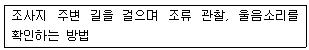
- 직접확인방법
- 라인센서스법
- 정점기록법
- 라이브트랩
(정답률: 54%)
19. 식물분포의 경정요인이 아닌 것은?
- 기후조건
- 토양조건
- 변화하는 환경요인에 대한 적응성
- 인근 종에 대한 친화성
(정답률: 81%)
20. 다음 설명은 어떤 습지 식물인가?
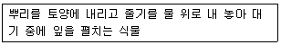
- 부엽식물
- 부수식물
- 정수식물
- 침수식물
(정답률: 80%)
2과목: 환경계획학
21. 다음 설명 중 어느 하나에 해당되지 않는 것은? (문제 복원 오류로 그림이 없습니다. 정답은 4번 입니다. 정확한 그림 내용을 아시는분 께서는 오류신고 또는 게시판에 작성 부탁드립니다.)
- 고도지구
- 특정용도제한지구
- 시설보호지구
- 자연환경보존지구
(정답률: 46%)
22. 다음 국토환경보전계획의 계획기조와 내용을 연결한 것 중 옳지 않은 것은?
- 인간과 자연의 공생 - 자연은 인간에게 생명과 삶의 터전을 제공
- 개발과 보전의 조화 - 환경의 건전성을 바탕으로 하는 상호 보완적인 관계
- 환경보전과 경제성장의 조화 - 환경보전과 경제성장은 상반(trade- off)관계
- 현 세대와 미래 세대의 형평 - 미리 세대의 환경 자원을 현 세대가 빌려 사용
(정답률: 68%)
23. 우리나라의 국토에 대한 용조지역구분 중 관리지역은 다시 세분화하여 구분된다. 다음 중 관리지역을 세분화할 때 세분화 유형에 해당하지 않은 지역은?
- 생산관리지역
- 보전관리지역
- 계획관리지역
- 공익관리지역
(정답률: 79%)
24. 다음 중 경관우수지역의 지속가능한 개발과 보전을 위한 원칙에 해당되지 않는 것은?
- 자연경관자원의 가치와 특성에 따른 차별성 확보
- 사유지 자연경관자원 훼손 활동의 규제적 접근 필요
- 근원적으로 개발행위가 발생하지 않도록 사전적 차원에서의 규제
- 자연경관은 자원의 특성을 고려하여 관리 방향 설정
(정답률: 59%)
25. 국토의 난개발을 방지한 개발과 보전의 조화를 유도하기 위하여 토지의 토양ㆍ입지 활용가능성 등에 따라 토지의 보전 및 이용가능성에 대한 등급을 분류하여 토지용도 구분의 기초를 제공하는 제도는?
- 토지적성평가
- 토지환경성평가
- 토지이용계획
- 용도지역지구제
(정답률: 61%)
26. 환경용량에 기초한 환경계획에 대한 설명 중 옮지 않은 것은?
- 환경용량개념은 성장의 한계가 우선적으로 전제된다.
- 환경용량은 지역크기와 그 지역에 생존하고 있는 유기체 특성의 함수 관계로 표시된다.
- 환경용량에 기초한 환경계획은 환경영향평가보다 지속 가능성 개념이 약한 단점이 있다.
- 환경용량에 기초한 환경계획은 대체로 다양한 환경 요인 중에서 대표 환경요인을 추출하여 그 요인을 기준으로 인간 활동의 한계를 파악한다.
(정답률: 69%)
27. 다음 설명은 어느 '국제협력기구'의 설명인가?
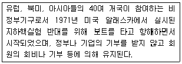
- 지구환경기금(the Global Environment Facility)
- 지구의 친구(Friends of the Earth)
- 그린피스(Greenpeace)
- 자연의 친구(Friends of the Nature)
(정답률: 75%)
28. “지속 가능한 발전” 이라는 기본원칙 하에서 자연 입지적 토지이용의 기본 관리방향들 만으로 적합하게 짝지워진 것은?
- 생태ㆍ자원관리형 보전, 국가경제와 부합하는 개발 유도, 무분별한 난개발 방지
- 국민소득의 증대, 무분별한 난개발 방지, 부동산 투기의 억제
- 생태ㆍ자원관리형 보전, 무분별한 난개발 방지, 경관 자원과 조화된 개발 유도
- 도시 시가지를 분절화 시켜 여러 가지 영향에 대해서 완화할 필요가 있다.
(정답률: 77%)
29. 환경친화적인 토지이용계획으로 옳지 않은 것은?
- 선진도시와 같이 도시 구조를 명확히 한 후 환경 보정형 도시로 도모할 필요가 있다.
- 도시지역 전체의 토지이용에 대한 상세한 규제와 통제가 필요하다.
- 도시의 분절화를 위해서는 도시 전체를 한꺼번에 계획해서 사업해 나가야 한다.
- 도시 시가지를 분절화 시켜 여러 가지 영향에 대해서 완화할 필요가 있다.
(정답률: 75%)
30. 환경에 영향을 미치는 행정계획의 수립 또는 개발 사업의 허가ㆍ인가ㆍ승인ㆍ면허ㆍ결정ㆍ지정 등을 함에 있어서 해당 행정계획 또는 개발사업의 대한 대안의 설정ㆍ분석 등 평가를 통하여 미리 환경측면의 적정성 및 입지의 타당성 등을 검토하는 제도는?
- 환경영향평가
- 인구영향
- 교통영향평가
- 사전환경성검토
(정답률: 45%)
31. 다음 자연환경보전기본계획에 대한 설명 중 옳지 않은 것은?
- 자연환경보전기본계획은 자연환경보전법에 의하여 수립되는 계획이다.
- 환경부장관은 자연환경보전기본계획을 수립함에 있어서 미리 관계중앙행정기관의 장과 협의를 거쳐야 한다.
- 자연환경보전기본계획은 매 5년마다 수립한다.
- 환경부장관은 확정된 자연환경보전기본계획을 관계 중앙 행정기관의 장 및 시ㆍ지도사에게 통보하고 그 시행결과를 2년마다 정기적으로 분석ㆍ평가한다.
(정답률: 58%)
32. 다음 중 전국 자연환경보전기본계획의 내용에 포함되지 않는 항목은?
- 자연환경의 현황 및 전망에 관한 사항
- 자연환경 조사 사업에 관한 사항
- 지방자치단체별로 추진할 주요 자연보전시책에 관한 사항
- 사업시행에 소요되는 경비의 산정 및 재원조달 방안에 관한 사항
(정답률: 35%)
33. 지구의 환경분제에 대처하기 위한 국제협력 프로그램 중에서 그 내용이 서로 맞지 않은 것은?
- 몬트리올 의정서 : 대기오염물질에 의한 오존 발생량을 규제하기 위한 국제협약
- 기후변화협약 : 지구의 온난화를 규제 방지하기 위한 국제협약
- 람사협약 : 물새 서식지로서 특히 국제적으로 중요한 습지에 관한 협약
- 생물다양성협약 : 생물종의 멸종위기를 극복하기 위해서 체결된 국제협약
(정답률: 57%)
34. 다음 중 자연환경보전 기본방침에 포함되어져야 하는 사항이 아닌 것은?
- 자연환경 훼손지의 복원, 복구
- 자연환경의 체계적 보전ㆍ관리, 자연의 지속가능한 이용
- 자연환경규제에 관한 국민 교육과 민간활력 증진
- 생태ㆍ경관보전지역의 관리 및 해당 지역주민의 삶의 질 향상
(정답률: 54%)
35. 다음 설명의 ( )안에 알맞은 구역은?
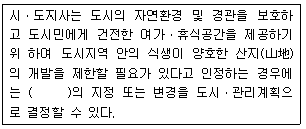
- 개발제한구역
- 도시자연공원구역
- 시가화조정구역
- 녹지보전구역
(정답률: 40%)
36. 도시 생태ㆍ녹지 네트워크 계획 수립의 흐름으로 적합한 것은?
- 과제정리 – 조사 – 해석 – 평가 – 계획
- 해석 – 조사 – 평가 – 과제정리 – 계획
- 조사 – 해석 – 평가 – 과제정리 – 계획
- 평가 – 조사 – 해석 – 과제정리 – 계획
(정답률: 64%)
37. 다음 중 환경의 특성과 그 내용 혹은 예를 맞게 설명한 것은?
- 상호관련성 : 환경문제는 상호 작용하는 여러 변수들에 의해 발생하므로 상호간에 인과관계가 성립되게되므로 단편적이고 부분적진 방법으로 해결해야 한다.
- 시차성 : 일본의 공해병으로 잘 알려진 이타이이타이병과 미나마타병도 짧은 기간 동안 배출된 오염물질의 영향이 뒤늦게 표출된 것이다.
- 광역성 : 고비사막에서 발원한 황사는 황하를 타고 중국 동남 연해까지 내려와 황해를 건너 한반도에 영향을 미친뒤, 태평양 넘어 미국까지도 이동하게 된다.
- 탄력성과 비가역성 : 자연자원은 풍부할수록 회보 탄력성이 낮고, 파괴될수록(자정능력)도 떨어지게 된다.
(정답률: 64%)
38. 도시 및 단지 차원의 환경계획에서 고려해야 할 사항으로 짝지어진 것은?
- 지속가능도시, 생태도시, 생태네트워크, 생태건축
- 지속가능도시, 생태도시, 생태네트워크, 지역사회 숲
- 지속가능도시, 생태도시, 생태네트워크, 생태공원
- 지속가능도시, 생태도시, 생태네트워크, 생태마을과 퍼머컬처
(정답률: 58%)
39. 유네스코 MAB(man and the biosphere program)에서 정한 생물권 보전기역(biosphere reserve)의 구성 지역에 해당하지 않는 것은?
- 복원지역
- 핵심지역
- 완충지역
- 전이지역
(정답률: 71%)
40. 다음 “지방의제21”의 설명 중 옳지 않은 것은?
- 1992년 브라질의 리우에서 개최된 유엔환경계획(UNEP)에서는 21세기 지구환경보전을 위한 행동강령으로서 의제21을 채택하였다.
- 의제21의 28장에서는 지구환경보전을 위한 지방정부의 역할을 강조하면서 각국의 지방정부가 지역주민과 협의하여 지방의제21(Local Agenda 21)을 추진하도록 권고하였다.
- 1997년 4월에는 우리나라 환경부에서 지방의제21작성 지침을 보급하고 순회설명회를 개최하면서 지방의제21의 추진이 전국적으로 확산되었다.
- 1999년 9월 제1회 지방의제21 전국대회(제주)이후 수차례의 토론과 협의를 거쳐 2000년 6월 지방의제21 전국협의회가 창립되었다.
(정답률: 40%)
3과목: 생태복원공학
41. 생물다양성에 대한 설명 중 맞는 것은?
- 생물간의 상호작용이 종의 존속을 가능하게 한다.
- 생물다양성은 국가 경쟁력과 상관이 없다.
- 종다양성에 있어서 유전적인 측면은 고려되지 않는다.
- 내부지역은 가장자리에 비해 종다양성이 높다.
(정답률: 72%)
42. 훼손지 비탈면 녹화용 식물선택의 기본적 요건에 해당되지 않는 것은?
- 다년생으로 동계의 보전효과가 높은 식물이어야 한다.
- 서식처로서의 일부 기능을 증진 혹은 개선시키는 것
- 생태계를 지속적으로 유지하지 못하는 곳에 지속성이 높은 생태계를 새롭게 만들어 내는 것
- 토양침식을 감소시키고, 식물을 이용하여 푸르게 만드는 것
(정답률: 40%)
43. 복원(Restoration)에 대한 설명으로 가장 적합한 것은?
- 훼손되기 이전의 원래 상태나 위치로 되돌리는 것
- 서식처로서의 일부 기능을 증진 혹은 개선시키는 것
- 생태계를 지속적으로 유지하지 못하는 곳에 지속성이 높은 생태계를 새롭게 만들어 내는 것
- 토양침식을 감소시키고, 식물을 이용하여 푸르게 만드는 것
(정답률: 78%)
44. 일명 선형 서식지라고도 하는 선형 생태통로와 관계가 없는 것은?
- 서식지간 연결
- 생울타리 조성
- 교량건설
- 방풍림 조성
(정답률: 59%)
45. 자연 표토 복원공법에 대한 설명으로 옳지 않은 것은?
- 기존응벽에 구조적으로 식생이 가능하도록 한 공법
- 자연생태의 표토를 재현하는 시스템화된 녹화공법
- 사면 안전은 물론 자연천이를 촉진하는 방법으로 훼손 이전의 생태계로 조기에 이르도록 개발된 공법
- 한국의 자생식물을 주요소재로 사용하는 경관생태적인 환경 복원녹화 공법
(정답률: 61%)
46. 토양수분의 보존 방법으로 옳지 않은 것은?
- 피복법으로 톱밥, 볏짚, 낙엽 등의 재료로 토양을 덮어주거나, 가장 많이 쓰이는 것은 비닐멀칭과 페이퍼 멀칭이다.
- 바람이 심한 건조기에 하는 방법으로 지표면을 얕게 호미질하거나 얕게 갈아서 하층과의 모세관의 연결을 끊어주고 그 위에 흙으로 피복하여 수분증발을 억제한다.
- 바람이 부는 방향과 직각으로 방풍 울타리나 방풍 식재를 한다.
- 나지의 경우 식물 식재 전에 콩과식물 등을 미리 심으면 질소 고정작용에 의한 토양개선 효과가 있고 수분을 유지시켜 준다.
(정답률: 79%)
47. 생태복원지역의 조사에 있어서 대상지역에 영향을 미치는 주변 지역에 대해 조사하여 생태복원 대상지역에 미치는 영향을 파악하는 것을 무엇이라고 하는가?
- 지역적 맥락(regional context)의 조사
- 역사적 자료의 조사
- 원형(prototype)의 조사
- 생태적 기반 조사
(정답률: 68%)
48. 유기물 시용 방안에 설명 중 옳은 것은?
- 퇴비란 볏집이나 기타 식물체를 부숙시킨 것이고, 구비란 유기물을 가축분뇨와 함께 부숙시킨 것으로 이러한 부산물 비료를 통틀어 퇴구비라 한다.
- 유기물의 토양개량재 효과는 토양속에 유기물 함량이 놓은 토양에서 잘 나타난다.
- 유기물 비료는 덜 부숙된 것을 사용하여 토양과 잘 섞이도록 경운 해주어야 한다.
- 산성 토양은 유기물과 함께 인산질 비료를 주면 비료의 효과를 감소시키기 때문에 피하는 것이 좋다.
(정답률: 52%)
49. 다음 중 훼손된 해안사구의 복원에 이용되는 대표적인 기법은?
- 모래집적울타리 설치
- 수제의 조성
- 생태적 암거 설치
- 횃대의 조성
(정답률: 67%)
50. 다음 중 수질정화 식물과 가장 거리가 먼 것은?
- 부레옥잠, 부들
- 부들, 갈대
- 개구리밥, 창포
- 택사, 돌피
(정답률: 74%)
51. 우리나라의 우수처리 시스템 모형의 물순환 순서로 사용되고 있는 것은?
- 쇄석 여과층 → 침투 연못 → 저류 연못 → 2차 저류시설
- 저류 연못 → 쇄석 여과층 → 2차 저류시설 → 침투 연못
- 쇄석 여과층 → 저류 연못 → 침투 연못 → 2차 저류시설
- 저류 연못 → 쇄석 여과층 → 침투 연못 → 2차 저류시설
(정답률: 60%)
52. 야생동물 이동통로 조성 과정 중 계획 및 설계단계에서 고려되어야 하는 사항이 아닌 것은?
- 위치의 선정
- 유형의 선정
- 모니터링 계획수립
- 충돌방지 및 유도방안 마련
(정답률: 66%)
53. 곤충 서식처의 조성 원칙 및 고려사항 중 식생과 관련된 설명으로 적합하지 못한 것은?
- 나비 유충의 먹이식물과 성충의 흡밀식물 및 먹이 식물, 나비와 일부 딱정벌레의 수액식물 등을 적절히 조화시켜 식재
- 관목과 교목들을 적절히 성토된 지역에 식재하고 다공질 공간과 관목으로 구성된 덤불도 식재
- 도입하는 식물들은 주변의 자생지로부터 이식
- 연못ㆍ호안에는 가급적 건생식물과 단층림을 조성
(정답률: 86%)
54. 답압에 의한 식생 피해지에서 시행하는 공법은?
- 나무심기
- 토양개량
- 비닐덮기
- 고착제 뿌리기
(정답률: 52%)
55. 환경보전림 조성시 다층위 구조의 식물사회를 형성할 수 있도록 수관층위별로 수종을 선발하여 군락ㆍ군집식재를 하는데, 식재밀도에 대한 설명 중 올바른 것은?
- 수고 1m 크기의 유묘(幼苗)는 20000주/㏊, 2~3m의 대묘(大苗)는 8000주/㏊ 정도로 한다.
- 수고 1m 크기의 유묘(幼苗)는 20000주/㏊, 2~3m의 대묘(大苗)는 800주/㏊ 정도로 한다.
- 수고 1m 크기의 유묘(幼苗)는 2000주/㏊, 2~3m의 대묘(大苗)는 8000주/㏊ 정도로 한다.
- 수고 1m 크기의 유묘(幼苗)는 2000주/㏊, 2~3m의 대묘(大苗)는 800주/㏊ 정도로 한다.
(정답률: 47%)
56. 다음 도시림에 대한 설명 중 생태복원의 측면에서 적합하지 못한 것은?
- 가로수, 주거지의 나무, 공원수, 그린벨트의 식생 등을 도시림이라 할 수 있다.
- 도시림은 조성 목적과 기능 발휘의 측면에서 생활 환경형, 경관형, 휴양형, 생태계보전형, 교육형, 방재형 등으로 구분한다.
- 도시림의 기능은 최근에는 지구온난화와 생물다양성 등의 지구환경문제와 관련하여 환경보존의 기능과 생태적 기능이 강조된다.
- 큰 나무 밑의 작은 나무와 풀을 제거하여 경관적인 측면을 고려한 관리가 되어야 한다.
(정답률: 83%)
57. 절토비탈면 소단 설치 설계기준으로 적합하지 않은 것은?
- 토사 5m마다 폭 1m의 소단 설치, 4% 횡단경사
- 리핑암 : 7.5m 마다 폭 1m의 소단 설치
- 발파암 : 20m 마다 폭 1m의 소단 설치
- 연암 : 30m 마다 폭 1m 의 소단 설치
(정답률: 39%)
58. 도로 비탈면에서 식물의 생육에 적합한 비탈면의 형상으로 바람직한 것은?
- 사면경사는 60°이상, 비탈면 길이 10m 이하, 계단 폭은 1m 이상
- 사면경사는 60°이하, 비탈면 길이 10m 이하, 계단 폭은 2m 이상
- 사면경사는 60°이상, 비탈면 길이 15m 이하, 계단 폭은 1m 이상
- 사면경사는 60°이하, 비탈면 길이 15m 이하, 계단 폭은 2m 이상
(정답률: 52%)
59. 수로박스, 황배수관, 수로암거 등을 이용한 겸용 생태통로를 만들 때 어떤 부속시설의 설치가 필요한가?
- 선반이나 턱 구조물
- 비포장 통로
- 울타리 설치
- 경사로
(정답률: 64%)
60. 자연형 하천 복구를 통해 반딧불이 서식을 유도하려면, 그 대벌레의 먹이원으로서 어떤 수생생물종이 서식해야 가능한가?
- 다슬기
- 소금쟁이
- 깔다구
- 왕잠자리
(정답률: 75%)
4과목: 경관생태학
61. 메타개체군 개념을 적용한 종 또는 개체군의 복원 방법이 아닌 것은?
- 포획번식
- 방사
- 돌발적 이동
- 이주
(정답률: 75%)
62. 다음 [보기]가 설명하는 특징을 가지는 해양 식물 군락은?
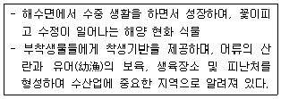
- 갈대 군락
- 거머리말(해초)군락
- 칠면초 군락
- 해조류 군락
(정답률: 63%)
63. 환경부 생태 ㆍ 자연도 조사 지침에 따른 습지 평가 항목에 포함되지 않는 것은?
- 보호야생동물번식지
- 특정식물서식지
- 수질정화
- 국가적 대표성
(정답률: 43%)
64. 일반적으로 경관을 지배하는 원리는 최소한 7가지의 주요한 명제에서 출발한다. 이것은 크게 경관의 구조, 경관의 기능, 경관의 변화에 관한 것으로 구분할 수 있는데 다음 [보기]의 a~g까지의 배열이 가장 바르게 된 것은?
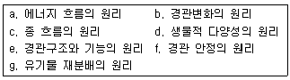
- 경관구조:d,e 경관기능:a,c,g 경관변화:b,f
- 경관구조:c,d,e 경관기능:a,g 경관변화:b,f
- 경관구조:a,e 경관기능:c,f,g 경관변화:b,d
- 경관구조:d,e 경관기능:f,g 경관변화:a,b,c
(정답률: 44%)
65. 다음 [보기]의 ( )안에 알맞은 용어는?
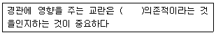
- 비생물학적 환경
- 규모
- 생물학적 요인
- 경쟁
(정답률: 45%)
66. 댐의 기능상 홍수 유출을 일시적으로 지체하여 갑작스런 홍수로 인한 피해를 막기 위한 댐으로 가장 적당한 것은?
- 지체댐
- 저수댐
- 취수댐
- 다목적댐
(정답률: 60%)
67. Landsat ETM+ 센서의 제원별 특성 및 응용 분야로 알맞지 않은 것은?
- 식생의 녹색반사 측정에 의한 식생판별 및 활력도 조사, 인공물의 식별 등에는 밴드2(0.525~0.6⑤um)가 사용된다.
- 밴드6(Themal영역)의 셀 크기는 30m 이다.
- 식생과 토양의 함수량 지표, 눈과 구름의 식별에 사용되는 영역은 Mid-IR이다.
- Landsat ETM+에는 Pan 밴드가 추가되어 전정색 영상의 획득이 가능해졌다.
(정답률: 52%)
68. 다음 중 비오톱의 생태적 가치 평가지표로 가장 타당한 것은?
- 이용강도 - 희귀종의 출현 유ㆍ무 - 재생복원능력
- 이용강도 - 접근성 - 포장율
- 포장율 - 종 다양성 - 소득수준
- 종 다양성 - 재생복원능력 - 인구 밀도
(정답률: 64%)
69. 사전환경성검토시 입지의 적절성을 판단하기 위한 현황 파악지표가 아닌 것은?
- 주요 생물 서식공간의 분포 현황
- 환경 관련 보전지역의 지정 현황
- 개발사업의 유형
- 개발 대상지역의 지가
(정답률: 75%)
70. 다음 중 해안사구의 보전을 위한 복원 및 훼손방지 방법이 아닌 것은?
- sand-trap fence에 의한 모래 집적 방법
- 사구 높이를 인위적으로 높여주는 방법
- 해안 사구 식물의 식재 방법
- 원활한 햅녀모래 공급을 위한 해주기형의 준설 방법
(정답률: 56%)
71. 지형이 생태계의 패턴과 과정에 미치는 일반적 영향이 아닌 것은?
- 지형에서 해발고도, 사면 방향, 모암, 경사도 등은 환경관내 여러 물질 분포의 양에 영향을 미친다.
- 지형은 산사태나 하천 수로 변화에 영향을 받는 정도를 서로 같게 만든다.
- 지형은 경관 내의 많은 생물 번식, 각종 물질 양의 흐름에 영향을 미친다.
- 지형은 산불, 바람 같은 자연교란의 빈도와 공간적 분포에 영향을 미친다.
(정답률: 70%)
72. 다음 중 댐이 환경에 미치는 영향으로 거리가 먼것은?
- 어류 등의 이동 저해
- 소하천의 감소, 수질의 변화
- 하류하천의 하상 재료 변화 및 하상의 상승
- 식생 및 동물 서식지역의 감소와 분리
(정답률: 64%)
73. 다음 그림에서 가장자리의 양이 가장 적은 것부터 바르게 연결된 것은?
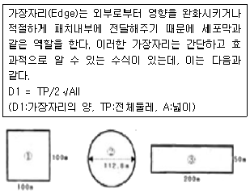
- ①＜②＜③
- ②＜①＜③
- ③＜②＜①
- ②＜③＜①
(정답률: 64%)
74. GIS의 구성요소에 대한 설명으로 거리가 먼 것은?
- Date는 GIS를 구성하는 가장 중요한 핵심요소이다.
- 공간 Date는 래스터데이터와 벡터데이터로 구분할 수 있다.
- 벡터데이터는 다양한 공간 형상들간의 공간 관계 정보를 인접성, 연속성, 영역성 등으로 제공된다.
- 벡터데이터는 실세계 공간형상을 일련의 셀들의 집합으로 표현하는 이미지 데이터로 기하학적 정보의 표현이 가능하며, 원격 탐사분야에 주로 이용된다.
(정답률: 63%)
75. 통로(corridor)의 기능에 대한 설명 중 틀린 것은?
- 통로는 서식처, 이동, 장벽, 여과대, 공급원, 수용처 등의 기본적인 기능을 가지고 있다.
- 선 통로는 가장자리를 좋아하는 생물들에 의해서 우점되는 반면에 충분히 넓은 띠 통로의 중심부는 내부종에 의해 점령될 수 있다.
- 통로는 주변 및 경관요소와 경계를 이루며 이웃하는 요소의 대비가 늘어나면 가장자리 침투력은 증가한다.
- 통로를 따라 이동하는 동물, 물, 자동차, 도보 여행자를 바탕으로 퍼져 감으로서 공급원 기능을 한다.
(정답률: 38%)
76. 자연경관계획에서 특별히 보호되어야 할 지역이 아닌 것은?
- 채석장 및 광산 채굴지역
- 자연보호지역
- 경관보호지역
- 보호가치가 있는 잔여경관 요소
(정답률: 73%)
77. 레빈(Levin)은 일반적으로 경관 공간 패턴을 만들어 내는 원인을 3가지로 구분하였다. 이것에 속하지 않는 것은?
- 지역 특이성(local uniqueness)
- 발달 단계 차이(phase difference)
- 확산(dispersal)
- 생태 추이대(ecotone)
(정답률: 45%)
78. 패치의 크기효과에 대한 설명 중 잘못된 것은?
- 서식지 패치가 커질수록 그 내부는 더 적은 국소적 환경의 다양성을 갖는다.
- 패채면적에 대한 주변길이의 비율을 계산하면 큰 패치보다 작은 패치쪽이 면적에 대한 주변길이 비율이 더 크다.
- 작은 패치일수록 가장자리 서식지가 차지하는 비율이 크며, 큰 패치일수록 내부 서식지가 차지하는 비율이 더 크다.
- 패치의 가장자리는 대체로 광 조건이 좋고, 따뜻하며 기후가 건조하고 동물들이 빈번하게 통과한다.
(정답률: 53%)
79. 우리나라 아한대림의 특징 수종이 아닌 것은?
- 잎갈나무
- 종비나무
- 전나무
- 녹나무
(정답률: 58%)
80. 메타개체군의 설명으로 가장 적당한 것은?
- 부적절한 서식공간에서 변종의 발생으로 새롭게 적응하며 생존하는 개체군집단
- 경관 앞에서 비서식처에 의해 어느 정도 격리되어 흩어져 있는 아개체군(subpopulation)들로 이루어진 개체군
- 서식지 공간의 크기에 맞추어 개체의 크기를 조절하여 적응한 2세대 개체군 집단
- 환경오염 지표종을 선별하여 인공 환경에서 배양한 환경식물 종 개체군들의 총칭
(정답률: 52%)
5과목: 자연환경관계법규
81. 야생동ㆍ식물보호법규상 행정처분기준으로 옳지 않은 것은?
- 일반기준으로 위반행위의 횟수에 따른 행정처분의 기준은 그 위반행위가 있은 날 이전 최근 2년간 같은 위반 행위로 행정 처분을 받은 경우에 적용한다.
- 일반기준으로 위반행위가 둘 이상인 경우로서 그에 해당하는 각각의 처분기준이 다른 경우에는 그 중 무거운 처분기준에 따른다.
- 개별기준으로 환경부령이 정하는 생물자원보전시설을 등록한 자가 갖추어야 할 등록요건 중 시설 및 인력요건이 모두 부족한 경우 1차 행정처분기준은 등록 취소이다.
- 개별기준으로 규정에 의해 박제업의 등록을 한 자가 환경부령이 정하는 사항을 기재한 장부를 비치하지 아니한 경우 3차 행정처분기준은 영업정지 3월이다.
(정답률: 49%)
82. 습지보전법상 습지보호지역으로 지정ㆍ고시된 습지를 「공유수면 간리 및 매립에 관한 법률」 에 의한 면허없이 매립한 자에 대한 벌칙기준은?
- 5년 이하의 징역 또는 5천만원 이하의 벌금
- 3년 이하의 징역 또는 2천만원 이하의 벌금
- 2년 이하의 징역 또는 1천5백만원 이하의 벌금
- 1년 이하의 징역 또는 1천만원 이하의 벌금
(정답률: 54%)
83. 야생동ㆍ식물보호법상 덫ㆍ창애ㆍ올무 그 밖에 이와 유사한 방법으로 야생동물을 포획하는 도구글 제작ㆍ판매ㆍ소지 또는 보관한자에 대한 벌칙기준으로 옳은 것은?(단, 학술연구, 관람ㆍ전시, 유해야생동물의 포획 등 환경부령이 정하는 경우는 제외)
- 1년 이하의 징역 또는 5백만원 이하의 벌금
- 2년 이하의 징역 또는 1천만원 이하의 벌금
- 3년 이하의 징역 또는 2천만원 이하의 벌금
- 5년 이하의 징역 또는 2천만원 이하의 벌금
(정답률: 36%)
84. 다음은 국토의 계획 및 이용에 관한 법률 시행령에서 용도지역 중 주거지역의 세분사항이다. ( )에 알맞은 것은?
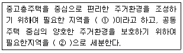
- ① 제2종전용주거지역, ② 제3종일반주거지역
- ① 제3종일반주거지역. ② 제2종전용주거지역
- ① 제3종전용주거지역. ② 제2종일반주거지역
- ① 제2종일반주거지역, ② 제3종전용주거지역
(정답률: 36%)
85. 환경정책기본법령상 이산화질소의 대기환경기준(ppm)은? (단, 24시간 평균치)
- 0.03이하
- 0.⑤이하
- 0.06이하
- 0.10이하
(정답률: 39%)
86. 다음은 자연환경보전법령상 생태ㆍ경관보전지역 지정에 사용하는 지형도이다. ( )안에 알맞은 것은?
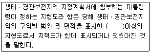
- 축척 5천분의 1
- 축척 2만5천분의 1
- 축척 5만분의 1
- 축척 10만분의 1
(정답률: 36%)
87. 독도 등 도서지역의 생태계보전에 관한 특별법 시행규칙상 특정도서에서의 행위허가신청서 작성 시 구비해야 할 서류목록으로 가장 거리가 먼 것은?
- 행위 대상지역의 범위 및 면적을 표시한 축적 2만 5천분의 1 이상의 도면 1부
- 당해 지역의 주민 의견을 수렴한 동의서 1부
- 당해 지역의 토지 또는 해역이용계획 등을 기재한 서류
- 당해 행위로 인하여 자연환경에 미치는 영향예측 및 방지대책을 기재한 서류 1부
(정답률: 56%)
88. 국토의 계획 및 이용에 관한 법률상 공동구 설치 비용을 부담하지 아니한 자가 규정에 의한 공동구관리자의 허가를 받지 아니하고 공동구를 사용한 경우의 과태료 부과기준은?
- 300만원 이하의 과태료를 부과한다.
- 500만원 이하의 과태료를 부과한다.
- 1천만원 이하의 과태료를 부과한다.
- 3천만원 이하의 과태료를 부과한다.
(정답률: 46%)
89. 환경정책기본법령상 도시지역 중 녹지지역의 밤시간대(22:00~06:00) 소음환경기준은? (단, 일반지역을 대상으로 하며, 단위는 Leq dB(A))
- 40
- 45
- 50
- 55
(정답률: 46%)
90. 다음은 백두대간 보호에 관한 법률 시행령상 백두대간 보호지역의 지정ㆍ지정해제 미 구역변경 고시사항이다. ( )안에 가장 알맞은 것은?
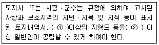
- ① 축척 2만5천분의 1, ② 10일
- ① 축척 5만분의 1, ② 10일
- ① 축척 2만5천분의 1 ② 20일
- ① 축척 5만분의 1, ② 20일
(정답률: 59%)
91. 다음 중 국토기본법상 중앙행정기관의 장 또는 지방자치 단체의 장이 지역특성에 맞는 정비나 개발을 위하여 필요하다고 인정하는 경우에 수립하는 지역계획으로 가장 거리가 먼 것은?(단, 그 밖의 다른 법률에 의하여 수립하는 지역계획 등은 고려하지 않음)
- 특정지역을 대상으로 경제ㆍ사회ㆍ문화ㆍ관광 등을 전략적으로 발전시키기 위하여 수립하는 개발계획
- 광역시와 그 주변지역, 산업단지와 그 배후지역 또는 여러 도시가 서로 인접하여 같은 생활권을 이루고 있는 지역 등을 광역적ㆍ체계적으로 개발하기 위한 계획
- 환경오염과 환경훼손을 예방하고 환경을 적정하고 지속 가능하게 보전시키기 위해 자연환경 보전 대상지역을 중심으로 한 자연환경 보전개발계획
- 다른 지역에 비하여 개발수준이나 소득기반이 현저히 열악한 낙후지역의 개발을 촉진하기 위하여 수립하는 계획
(정답률: 50%)
92. 농지법규상 실습지 등으로 농지를 소유할 수 있는 공공단체 등의 범위기준에 해당하지 않는 것은?
- 「농약관리법」 에 따라 등록을 한 농약의 제조업자 ㆍ 수입업자 및 그 단체
- 「전통음식보존법」 에 따라 지정ㆍ등록된 한국전통 음식연구원
- 「농업기계화촉진법」 에 따른 농업기계를 생산하는 자 및 그 단체
- 「종자산업법」에 따라 등록을 한 종자사업자 및 그 단체
(정답률: 64%)
93. 국토의 계획 및 이용에 관한 법률상 도시ㆍ군관리계획에 관한 설명으로 옳지 않은 것은?
- 도시ㆍ군관리계획을 입안하는 경우 입안을 위한 기초조사의 내용에 도시ㆍ군관리계획이 환경에 미치는 영향 등에 대한 환경성검토를 포함하여야 한다.
- 도시ㆍ군관리계획의 수립기준, 도시ㆍ군관리계획도서 및 계획설명서의 작성기준ㆍ작성방법 등은 대통령령으로 정하는 바에 국토해양부장관이 정한다.
- 도시ㆍ군관리계획 결정은 고시가 된 날부터 10일 후에 그 효력이 발생한다.
- 특별시장ㆍ광역시장 등은 5년마다 관할구역의 도시ㆍ군 관리 계획에 대하여 타당성 여부를 재검토하여 정비하여야 한다.
(정답률: 43%)
94. 환경정책기본법령상 하천의 수질 및 수생태계 환경기준으로 옳지 않은 것은?(단, 사람의 건강보호기준이며, 단위는 mg/L)
- 음이온계면활성제(ARS) : 0.5이하
- 벤젠: 0.⑤이하
- 크롤로포름 : 0.08 이하
- 테트라클로로에틸렌(PCE): 0.04이하
(정답률: 42%)
95. 다음 중 습지보전법의 목적으로 가장 거리가 먼것은?
- 습지의 효율적 보전ㆍ관리에 필요한 사항을 규정한다.
- 습지오염에 따른 국민건강의 위해를 예방하고, 습지개발을 통하여 국민으로 하여금 그 혜택을 널리 향유할 수 있도록 한다.
- 습지에 관한 국제협약의 취지를 반영하고 국제협력의 증진에 이바지 한다.
- 습지와 그 생물다양성의 보전을 도모한다.
(정답률: 59%)
96. 국토기본법령상 중앙행정기관의 장 및 시ㆍ도지사가 수립하는 국토종합계획 실행을 위한 소관별 실천계획은 몇 년 단위로 작성하는가?
- 1년
- 3년
- 5년
- 10년
(정답률: 49%)
97. 개발제한구역의 지정 및 관리에 관한 특별조치법 시행규칙상 경계표석의 규격 및 설치방법으로 옳지 않은 것은?
- 표석의 재료는 강화플라스틱(FRP)으로 하고, 표석의 색은 녹색으로 한다.
- “개발제한구역”이라는 글씨는 양각 후 도색마감(흰색)하고, 번호(검은색)는 구리 압출마감으로 부착한다.
- 강화플라스틱과 콘크리트로 된 기초가 일체가 되도록 설치한다.
- 글자체: 고딕체, 글자색: 녹색(Pantone 370C), 흰색(White 100%), 검은색(Black 100%)으로 한다.
(정답률: 60%)
98. 국토의 계획 및 이용에 관한 법률 시행령상 시설 보호지구를 세분한 것에 포함되지 않는 것은?
- 항만시설보호지구
- 주거시설보호지구
- 학교시설보호지구
- 공용시설보호지구
(정답률: 42%)
99. 농지법규상 농지전용허가신청서에 첨부하여야 할 서류가 가장 거리가 먼 것은?
- 전용예정구역이 표시된 지적도 등본 또는 임야도 등본과 지형도
- 전용목적, 시설물의 활용계획 등을 명시한 농지전용신고서
- 해당농지의 전용이 농지개량시설 또는 도로의 폐지 및 변경이나 토사의 유출, 악취의 발생 등을 수반하여 인근 농지의 농업경영과 농어촌 생활환경의 유지에 피해가 예상되는 경우에는 대체시설의 설치 등 피해방지 계획서
- 전용하려는 농지의 소유권을 입증하는 서류(토지등기부 등본으로 확인할 수 없는 경우에 한정한다)또는 사용승낙서ㆍ시용승낙의 뜻이 기재된 매매계약서 등 사용권을 가지고 있음을 입증하는 서류
(정답률: 42%)
100. 다음은 자연공원법상 사용되는 용어의 뜻이다. ( )안에 알맞은 것은?
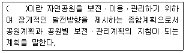
- 자연공원개발계획
- 자연공원보전계획
- 자연공원보전계획
- 공원기본계획
(정답률: 50%)